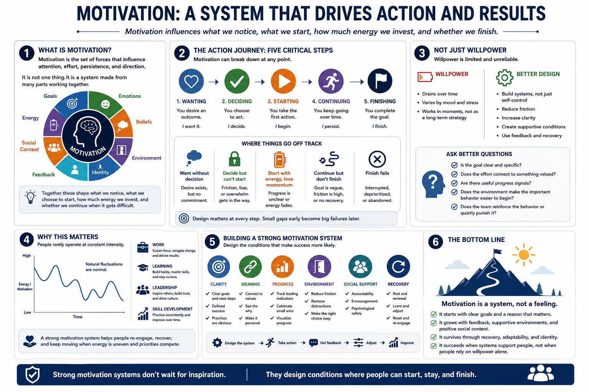

What Is Motivation?
Connecting to LMS... Progress: in progress

Narration
Motivation is the set of forces that influence attention, effort, persistence, and direction. It affects what people notice, what they choose to start, how much energy they invest, and whether they continue when the work becomes difficult. In practical terms, motivation is not one thing. It is a system made from goals, emotions, beliefs, environment, identity, feedback, social context, and available energy.
It helps to separate wanting, deciding, starting, continuing, and finishing. A person can want an outcome without deciding to act. They can decide to act and still struggle to start. They can start with energy and then lose momentum when progress is unclear. They can continue for a while and still fail to finish because the goal was too vague, the environment created too much friction, or recovery was ignored.
Motivation is therefore not simply willpower. Willpower matters in moments, but it is a limited and unreliable foundation for sustained performance. Better motivation design looks at the whole system around the behavior. Is the goal clear? Does the effort connect to something valued? Are there useful progress signals? Does the environment make the important behavior easier to begin? Does the team reinforce the behavior or quietly punish it?
This matters in work, learning, leadership, and skill development because people rarely operate at constant intensity. Motivation naturally fluctuates. A strong motivation system does not require people to feel inspired every minute. It helps them re-engage, recover, and keep moving when energy is uneven, priorities compete, and the work is meaningful but not always exciting.